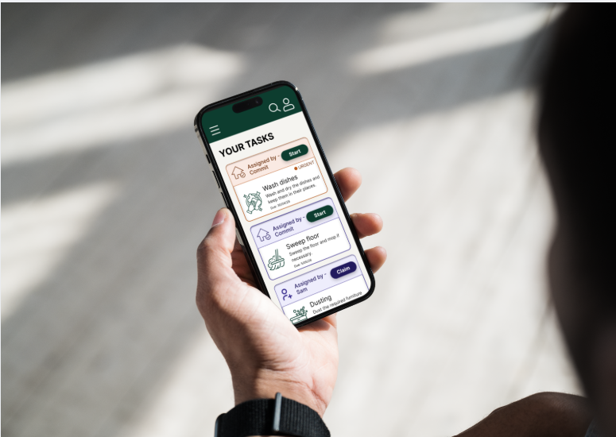
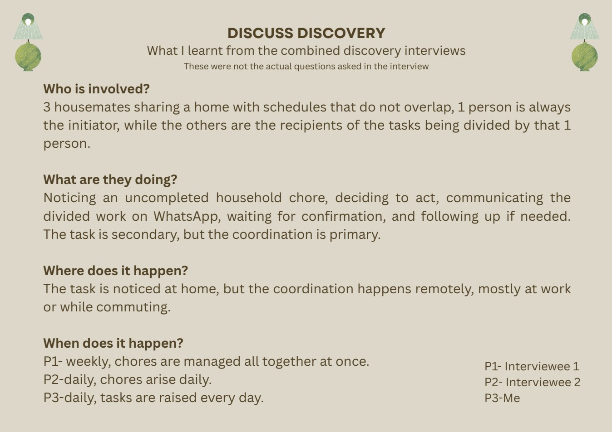
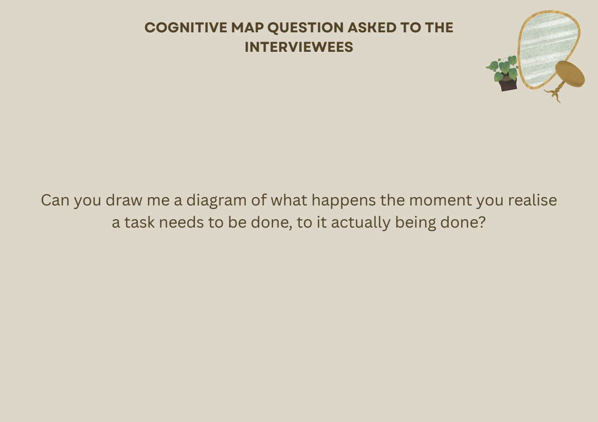
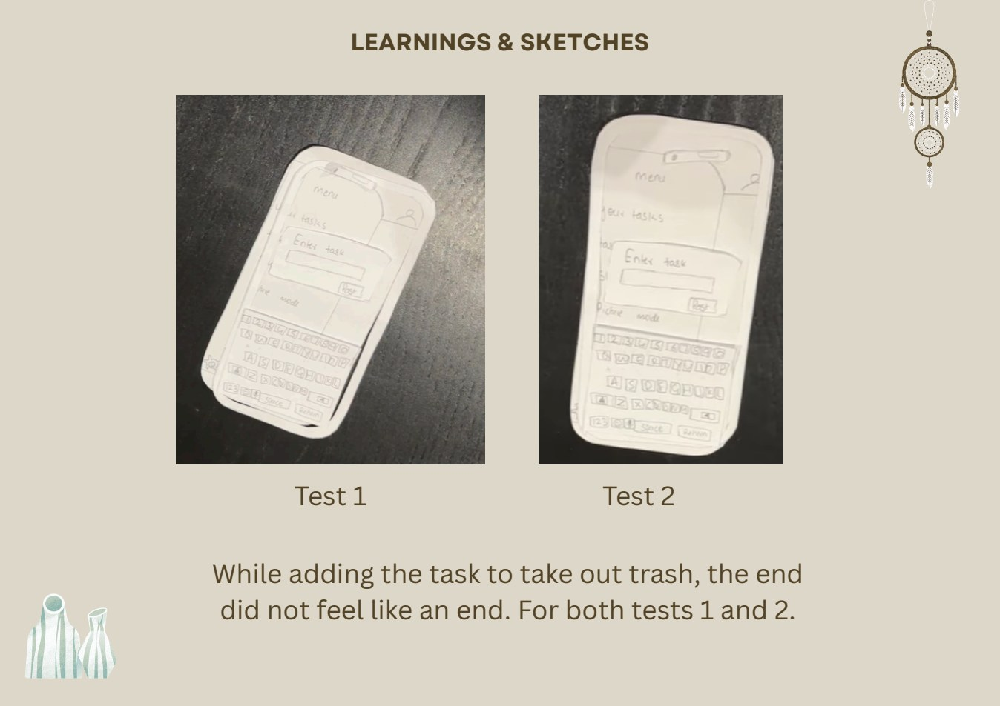
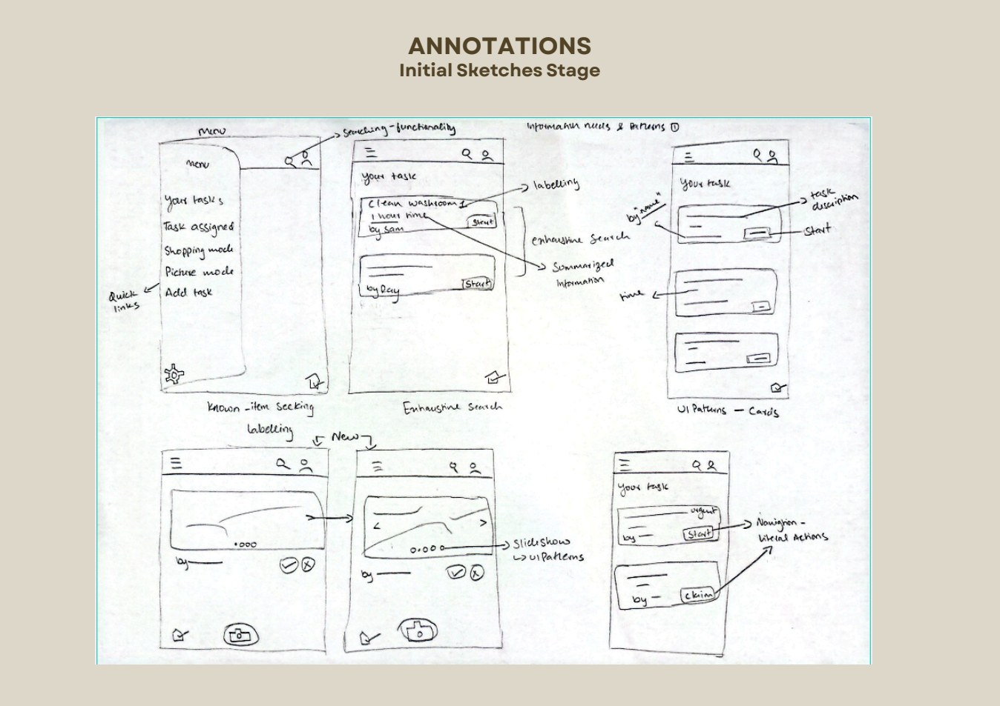
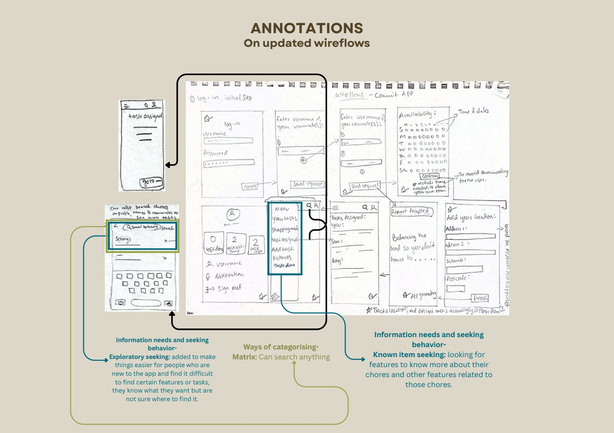
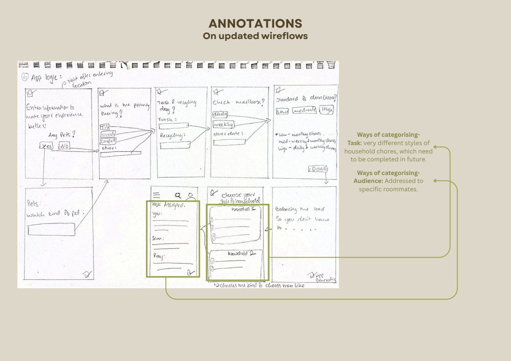

Commit App
A focused chore coordination journey for housemates, designed from discovery interviews and tested scenarios rather than a complete end-to-end product build.

Case study
Commit App responds to the tension of shared household work: chores become visible, one person carries the mental load, and coordination happens through scattered messages. The prototype focuses on one part of the user journey so that the interaction could be researched, tested, and developed in depth.
- The problem was not just task completion; it was coordination, confirmation, and relief from repeated follow-up.
- The prototype was intentionally scoped around a test scenario instead of presenting a fully finished product.
- The design explored how to make assigning, confirming, and tracking a task feel less confrontational.
Research
Discovery interviews showed that chores are often noticed at home, but negotiated remotely through WhatsApp, calls, or delayed follow-ups. Users wanted a clean space and a fair split without becoming the person who always has to initiate.


Sketching
Sketches and tests helped reveal where the flow felt unfinished or unclear. In early tests, the end of adding a task did not feel like a true end, and some picture-mode interactions were misunderstood.

Iterating
The iteration focused on clearer endings, better task information, and easier ways for users to understand where to go next. Updated wireflows also considered information needs: known-item seeking, exploratory seeking, and different ways to categorise chores.


Wireframes and prototype
The final prototype represents a specific journey rather than every possible feature. It shows how a user can move through the task scenario, make the task clearer, and reduce the awkwardness of follow-up.
